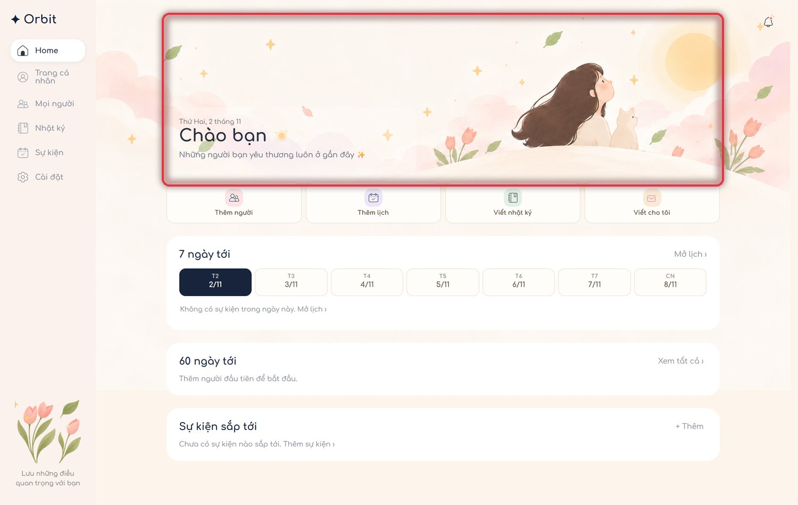
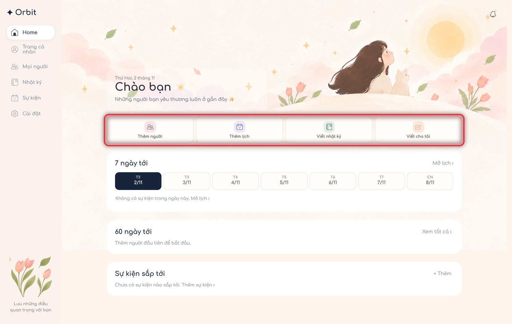
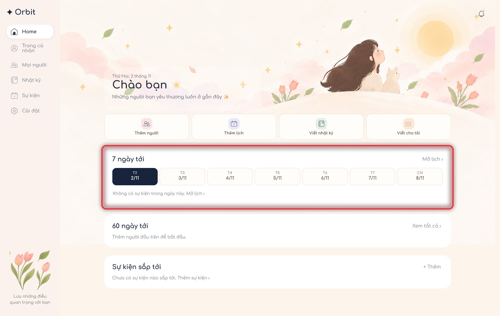
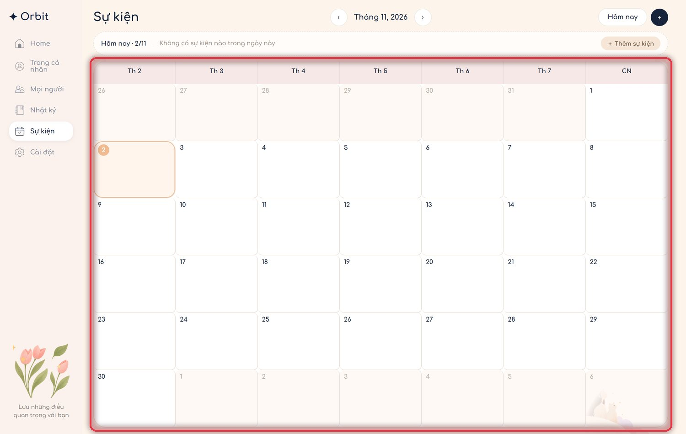
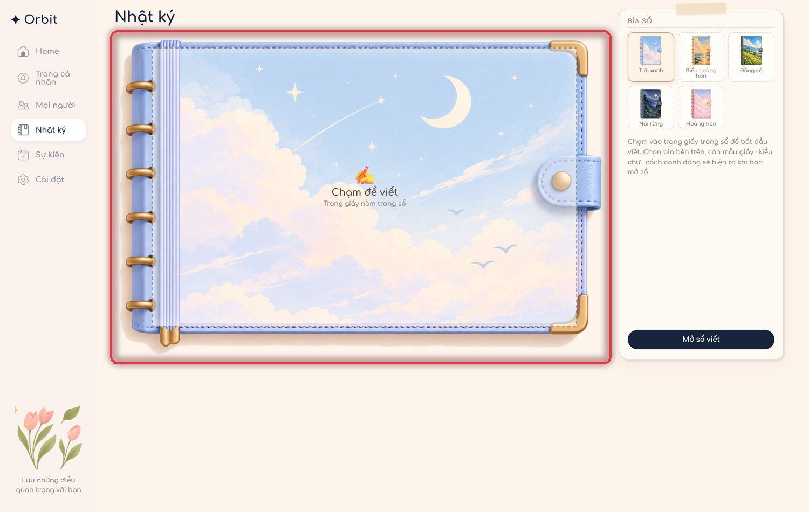
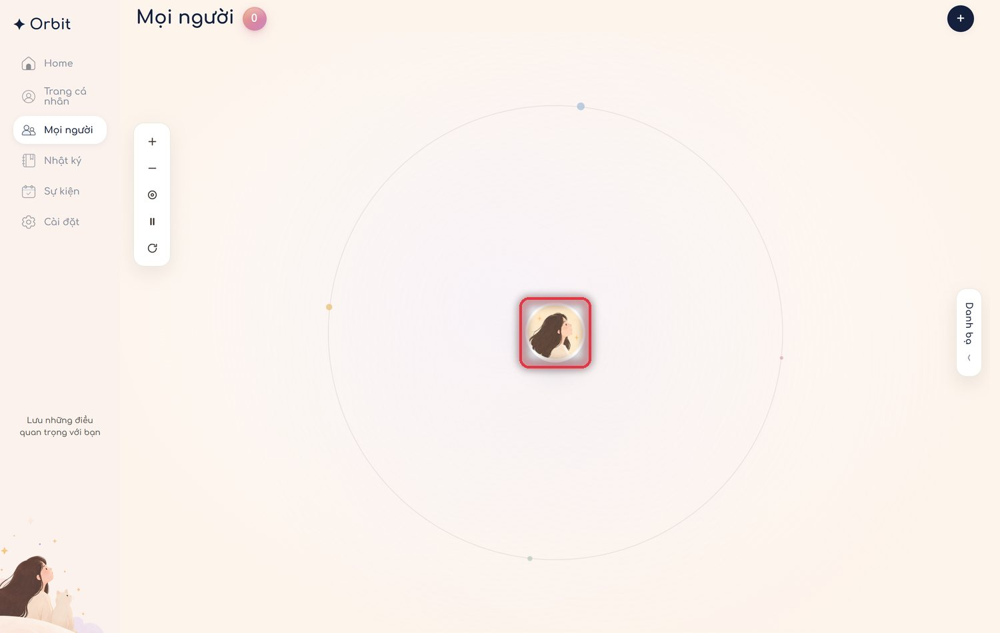
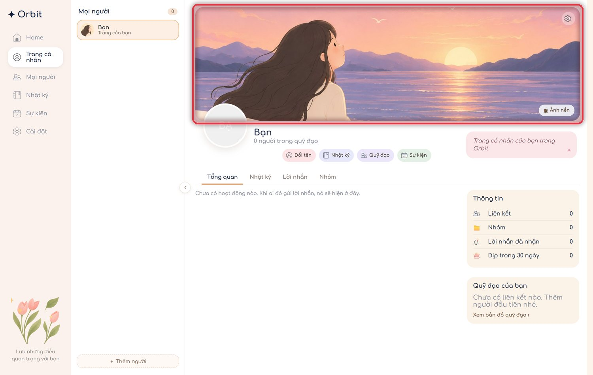
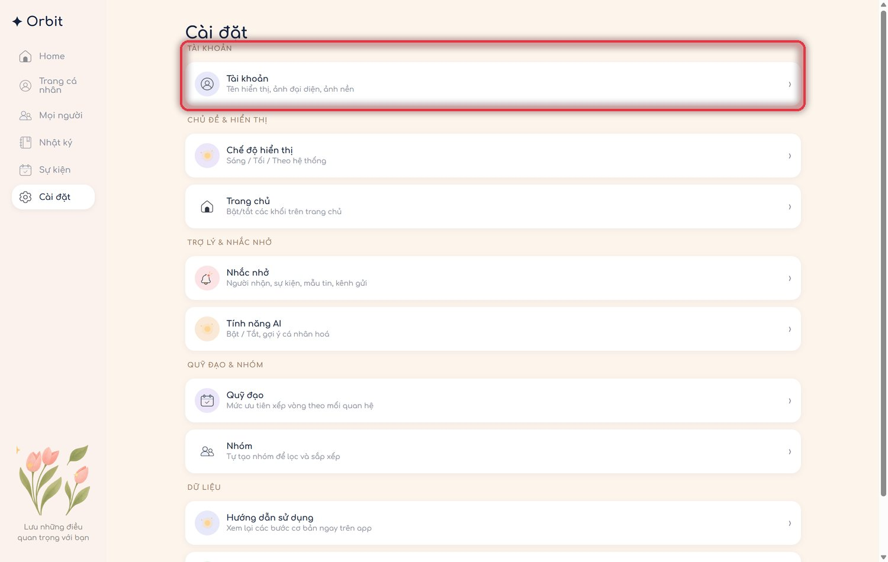

Hướng dẫn sử dụng Orbit
Tám bước để làm quen: từ trang chủ, lịch, nhật ký đến quỹ đạo những người bạn quan tâm.
Trang chủ — nơi mọi thứ bắt đầu
Khối chào cho biết hôm nay là ngày nào và tên của bạn. Bên dưới là toàn bộ lối tắt: thêm người, thêm lịch, viết nhật ký và tạo link “Viết cho tôi”.

Mẹo Ảnh nền và câu chào đổi theo chủ đề Nữ / Nam trong Cài đặt.
Bốn nút tắt nhanh
Thêm người (mối quan hệ mới), Thêm lịch (sự kiện), Viết nhật ký (mở sẵn một trang giấy mới) và Viết cho tôi (tạo link + mã QR để người khác gửi điều họ muốn nói).

Mẹo “Viết nhật ký” mở thẳng trang giấy, không phải qua bước trung gian nào.
7 ngày tới
Dải ngày của tuần hiện tại. Ngày có sự kiện được tô đậm kèm dấu chấm, ngày đang chọn có nền navy. Bấm một ngày để xem danh sách việc của ngày đó.

Mẹo Ngày hiển thị dạng ngày/tháng, ví dụ 11/11.
Lịch sự kiện
Tất cả sinh nhật, kỷ niệm và cuộc hẹn nằm trên một lịch tháng. Bấm vào ô bất kỳ để thêm sự kiện cho đúng ngày đó.

Mẹo Nút “Hôm nay” đưa bạn về tháng hiện tại; dấu + góc phải thêm nhanh sự kiện.
Nhật ký
Cuốn sổ lật từng trang: chọn bìa, mẫu giấy (kẻ dòng / chấm / trắng / ảnh tự tải) và kiểu chữ ở cột bên phải, rồi chạm vào trang để viết.

Mẹo Nội dung lưu dạng chữ, nên cùng một bài hiển thị đúng trên cả máy tính và điện thoại.
Mọi người — quỹ đạo của bạn
Mỗi người nằm trên một vòng tròn quanh bạn: càng gần tâm càng thân thiết. Bấm vào một người để xem hồ sơ, kỷ niệm và lời nhắn.

Mẹo Kéo để xoay quỹ đạo, dùng nút thu nhỏ/phóng to ở góc để nhìn rộng hơn.
Trang cá nhân
Đổi ảnh bìa, ảnh đại diện và tên ngay tại đây. Tên này cũng chính là “Viết cho …” trong mỗi trang nhật ký.

Mẹo Mỗi người khác cũng có trang riêng cùng bố cục, kèm nút nhắc nhở nhanh.
Cài đặt
Tài khoản, chủ đề nam/nữ, các khối trang chủ, nhắc nhở, mẫu tin nhắn, xuất dữ liệu — mọi thứ gom theo nhóm ở đây.

Mẹo Mở lại hướng dẫn này bất cứ lúc nào ở mục “Hướng dẫn sử dụng”.